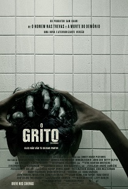

O Grito.
Lançamento nacional: 13 de fevereiro de 2020.
- Título Original: The Grudge;
- Diretor:
- Gênero: terror;
- Elenco:
- Nacionalidade: EUA;
- Produção:
- Censura: 16 anos;
- Duração: 1 h e 34 min;
- Sinopse: Uma maldição nascida no Japão é desencadeada simultaneamente nos EUA. Aqueles que a encontram são consumidas por sua fúria e tiveram um destino violento. O produtor Sam Raimi nos traz o capítulo não contado deste clássico de terror, estrelado por Andrea Riseborough, Demián Bichir, John Cho e Betty Gilpin, com a lenda do filme de terror Lin Shaye (INSIDIOUS, OUIJA), e Jacki Weaver no filme mais sombrio, assustador e chocante do mundo;;
- Autor: Takashi Shimizu;
- Roteiristas: Nicolas Pesce e Jeff Buhler;
- Produtores: Sam Raimi, Robert G. Tapert, Takashige Ichise, Brady Fujikawa, Roy Lee e Schuyler Weiss;
- Distribuição nacional: Sony Pictures.
Para ver o trailer oficial, em inglês, clique aqui.
Site Oficial | Facebook | Twitter (em inglês) | Instagram (em inglês)